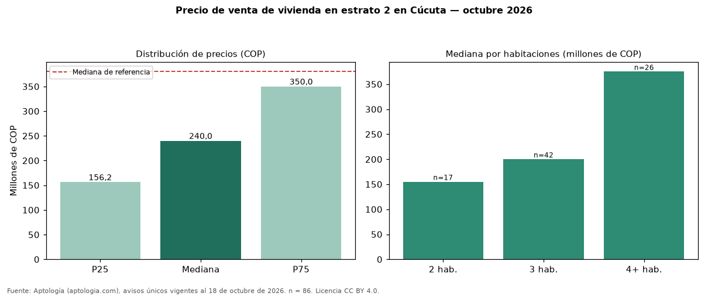

Precio de venta de vivienda en estrato 2 en Cúcuta — octubre 2026
Con 86 avisos únicos, el precio mediano de vivienda en estrato 2 en venta en Cúcuta es COP 240 millones. Frente a toda la oferta de venta en Cúcuta (COP 380 millones), la diferencia es de 37 % por debajo. Por metro cuadrado, la mediana es COP 2.211.111/m² (−24 % frente a COP 2.925.974/m²). El rango intercuartílico va de COP 156 millones a COP 350 millones (razón 2,2). Por habitaciones: 2 habitaciones, COP 155 millones (n = 17); 3 habitaciones, COP 200 millones (n = 42); 4 o más habitaciones, COP 375 millones (n = 26). El área mediana es 100 m² (referencia: 134 m²). La antigüedad mediana declarada es de 19 años. Datos abiertos CC BY 4.0 de Aptología; fuente y búsqueda de inmuebles: https://www.aptologia.com/venta/cucuta. Archivos: PDF de 2 páginas, CSV con las cifras y gráfica PNG.

| Avisos únicos | 86 |
|---|---|
| Percentil 25 | COP 156.250.000 |
| Mediana | COP 240.000.000 |
| Percentil 75 | COP 350.000.000 |
| Mediana por m² | COP 2.211.111 |
Fuente: avisos vigentes de portales inmobiliarios recopilados por Aptología, deduplicados (mínimo 30 avisos únicos por celda). Precios pedidos, no cerrados. Fecha: 2026-10-18.